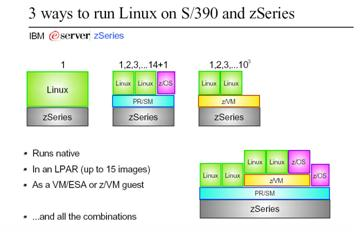
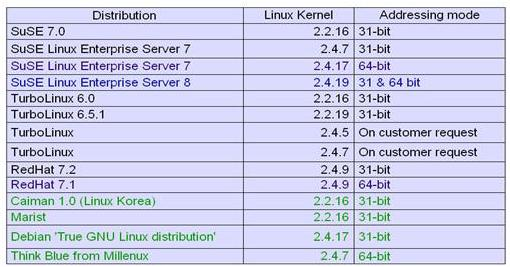
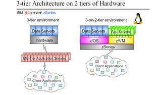

Linux для S/390 (IBM z-Series)
Автор: © Cuneyt Goksu <cuneytgoksu(at)usa.net>
Перевод: © Иван Песин (ipesin(at)post.Lviv.UA)
Оригинал статьи опубликован в журнале LinuxFocus
Аннотация:
S/390 это мощная аппаратная платформа фирмы IBM для больших
предприятий. Теперь её поддерживает и Linux.
История
Первая версия операционной системы Linux, появившаяся в 1991 году,
работала только на IBM PC-совместимых компьютерах. С тех пор она была
портирована на множество других архитектур, таких как компьютеры
Apple, Atari и Amiga, рабочие станции Sun Sparс; персональные
компьютеры на основе процессоров Alpha и MIPS, PowerPC, HP PA-RISC и
ARM.
S/390 это название архитектуры мейнфреймов от IBM. Данная
архитектура широко используется с операционными системами IBM VM, VSE
и z/OS (бывшие MVS и OS/390). IBM выбрала Linux, как "родную"
операционную систему для этой серьезной архитектуры с 1999 года.
Важнейшей причиной реализации Linux на платформе S/390 было
желание создать связное решение с наработанными приложениями, Linux
приложениями и связующим программным обеспечением, таким как
веб-сервер, почтовый сервер, сервер приложений, межсетевой экран и
т.д.
Широко распространено мнение, что Linux работает как интерфейс или
эмуляция на платформе S/390, но это не так. Linux работает как
"родная" операционная система, таким образом ею
используются все аппаратные возможности платформы. Ядро Linux и
основной код используются без всяких изменений и структура системы
остается прежней. Потребовались лишь некоторые "адаптации",
которые были необходимы, чтобы соответствовать специфике архитектуры
S/390. Она работает с набором символов ASCII, а не EBCIDIC.
Интеграция Linux и архитектур S/390, zSeries
На платформу S/390 Linux можно установить тремя разными способами.
-
Родной режим (Native Mode):
Устанавливается прямо на системное аппаратное обеспечение. Такое решение
применяется редко, поскольку в результате на аппаратном уровне работать
будет только одна операционная система.
-
Логические разделы (Logical Partitions,
LPAR): Аппаратное разбиение на разделы позволяет создать до 15-и
"логических разделов", в каждом из которых работает отдельная
операционная система, как традиционная (MVS, VSE, OS/390), так и Linux.
-
Виртуальные разделы (Virtual Partitions, z/VM): Это называется
"виртуализационной технологией z/Series". Она позволяет запускать
большое число ОС Linux (1000+) на одном и том же аппаратном обеспечении.
Кроме того, данная технология имеет развитую систему управления работающими
ОС. Этот вариант установки очен гибок и отлично подходит для серверных систем.
На диаграмме показаны три варианта установки:

Если требуемое количество серверов Linux 15 или меньше, вам
подойдет решение на основе LPAR. Если вам нужно больше -- 100 или
1000, тогда решение должно быть на основе z/VM.
Основные дистрибутивы для S/390 и zSeries -- это Red Hat, SuSE и
Turbolinux.
Ниже приведены ссылки на эти дистрибутивы.
Red Hat:
SuSE:
TurboLinux:
Есть также несколько бинарных дистрибутивов. Вот ссылки.
Дистрибутивы для s/390 и zSeries

Требования для запуска Linux на платформе S/390
- Процессоры IBM 9672 G5/G6,
Multirise 3000 или z/Series 800, 900, 990
- Как минимум 64Мб памяти (больший
объём зависит от количества дополнительных приложений, которые
планируется использовать)
- 500-цилиндровый+ диск (модель 3390
- минимум)
- Поддержка одного из сетевых
устройств IBM, а именно: Ethernet, Token Ring, Fast Ethernet, ESCON,
OSA или HiperSocket.
- Для того, чтобы Linux мог работать
с устройством, соответствующий драйвер для zSeries и S/390 должен
быть доступен ядру.
- Драйвера для устройств S/390 и
zSeries могут быть статически скомпонованы с ядром или
использоваться в виде подгружаемых модулей.
- Драйвера в виде подгружаемых
модулей загружаются при необходимости и получают свои параметры при
помощью команд.
- Статически собранные с ядром
драйвера принимают свои параметры во время загрузки из командной
строки ядра, которая хранится в файле.
- Драйвера с закрытым исходным кодом (OCO, Object Code Only),
это драйвера со специальными условиями лицензирования (например,
QETH для OSA Express GbE и Hipersocket, Tape 3590). Драйвера OCO
могут не поставляться с дистрибутивами и их необходимо загрузить с
веб-узла IBM Developer Works
Зачем нужен Linux для s/390 ?
Наиболее весомая причина это консолидация серверов.
Трехзвенная программная архитектура легко может быть реализована в рамках двухзвенной
аппаратной архитектуры. (Клиент / сервер приложений / сервер данных) эти три
классические компоненты могут превратиться в две при использование архитектуры
S/390 (сервер приложений и баз данных). Поддержка коммуникационной подсистемой
гиперсокетов (hipersocket) и волоконно-оптических каналов (fiberchannel) снимает
проблемы связи. Существующее ПО становится распределенным, а после и веб-ориентированным.
Данные и приложения распространяются по компьютерам. Возрастает количество серверов.
Это приводит к следующим проблемам:
- Каждый новый сервер означает новую
аппаратуру, место, увеличение охлаждающих мощностей, прокладку
кабелей, соединения и т.п. И каждый раз все эти "физические"
составляющие должны контролироваться и регулироваться.
- Все программное обеспечение должно
быть лицензировано для каждого сервера, что означает дополнительные
денежные вложения. Например, ваша база данных лицензируется по
количеству процессоров.
- Инфраструктура это еще один очень
важный момент. Прокладка кабелей, шлюзы, коммутаторы, маршрутизаторы
и другие подобные компоненты увеличивают общую стоимость.
- Решения по аварийному
восстановлению систем практически невозможны при использовании
разных серверов. Стоимость эксплуатации и поддержки решений по
аварийному восстановлению увеличивается, решения становятся все
сложнее с ростом количества серверов, пока не становятся просто
нереальными.
- Операции по управлению базой данных, приложениями, системой,
распределением доступных вычислительных ресурсов необходимо
выполнять на каждом сервере в отдельности.
Это был список потенциальных проблем в случае, когда Linux-системы
работают на различных аппаратных платформах. Если они все будут
работать на одной платформе S/390, ситуация изменится:
- Несмотря на то, что все
Linux-системы работают на одной и той же аппаратной базе (ЦП,
подсистема ввода-вывода, память, и т.п.) каждая система работает,
как совершенно самостоятельный сервер и может быть использована для
различных целей. В этом случае, рост количества серверов практически
не отражается на стоимости поддержки. Системы легко контролируются и
управляются, что экономит время. Благодаря разделению ресурсов
обеспечивается максимальная пропускная способность.
- Все сервера работают на одном
процессоре, что уменьшает затраты на лицензирование.
- Все соединения между серверами
внутренние, таким образом уменьшаются накладные расходы и
максимизируется сетевая производительность.
- Добавление нового сервера является
простым клонированием логического сервера.
- Аварийное восстановление систем упрощается, становится более
практичным и осуществимым. Фермы и подсистемы хранилищ данных DASD
(Direct Access Storage Device) могут быть быстро и безопасно
скопированы в течении короткого времени при помощи специальной
функциональности FlashCopy, PPRC (Peer-To-Peer-Remote-Copy) или
Snapshot.

Ресурсы:
- Linux for S/390, IBM Redbook
- Linux for z/Series, Atruro Calandrino, zSeries Tech. Support
Copyright © Cuneyt Goksu
Вернуться на главную страницу